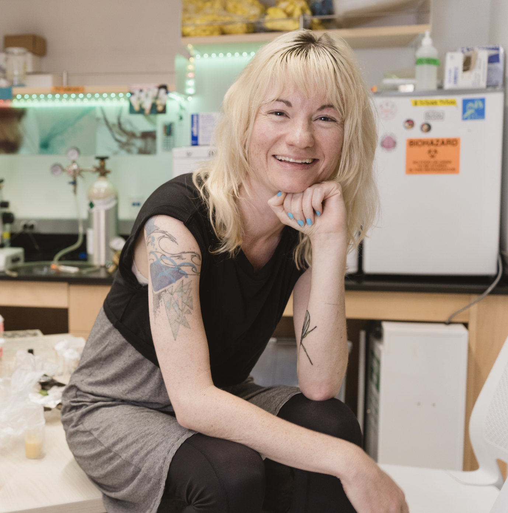

about / practice
A studio practice exploring living systems, materials, and bioelectronics through education, experimentation, and making.

Founded by Ann Marie Macara
Bioartist • Neuroscientist • Educator
I am a bioartist, neuroscientist, and educator exploring how art can transform our relationships with the living world. My work investigates what happens when art and biology are approached not as separate disciplines, but as partners in discovery. Through bioart and experimentation, I create opportunities for people to slow down, observe closely, and engage with living systems in new ways. I believe creative practice can foster curiosity, ecological connection, and a deeper sense of wonder, inviting us to see the organisms and environments around us not simply as subjects of study, but as collaborators in discovery. Bioart Lab is an evolving interdisciplinary practice exploring the intersections of art, biology, and electronics through curiosity, experimentation, and making.
practice areas
Bioplastics, bioyarns, biopastes, mycelium materials, and experimental fabrication with biodegradable matter.
Natural pigments, fungal dyes, bacterial color, plant pigments, and color as biological process.
Circuits, sensors, LEDs, sound, feedback, and bioresponsive systems as creative material.
Lesson plans, recipes, and project structures for hands-on experimental biology and bioart education.
background / cv
Ph.D., Molecular, Cellular, and Developmental Biology (Neuroscience), University of Michigan
Upper School Science Teacher, Wildwood School, Los Angeles (2020–present)
Develop and teach interdisciplinary biology and neuroscience courses; currently developing a high school mycology course integrating fungal biology, cultivation, bioart, and inquiry-based learning.
connect
Bioart Lab is an evolving studio practice. Workshop, curriculum, collaboration, and community science inquiries are welcome.